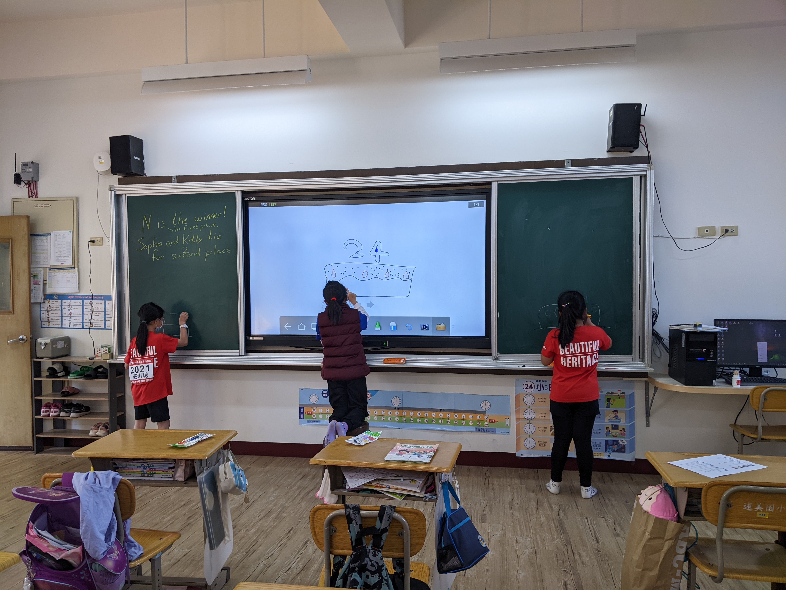
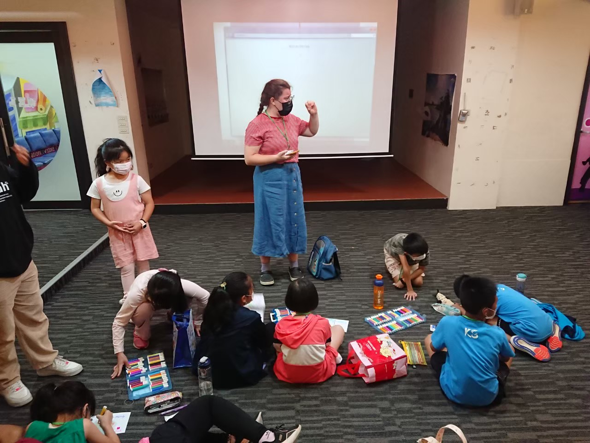

Throughout my life I have been a teacher, in the past two years I gained official teaching experience.
In the fall of 2020 COVID was hitting hard and parents were making hard
decissions about what to do about their children's schooling. Because of
these decissions I had the opportunity to work with a pod of six kids. I
had three first graders, a third, fourth, and fifth grader. My students
all had virtual school with their teachers for a few hours in the morning.
In the morning I was doing a lot of classroom management, helping students
with their work, and planning for the afternoon. In the afternoon we always
had time to do school work and then I got to do enrichment activities with them.
We did everything from going on nature walks, to building robots, to art
activities, to desiging boats. I worked with the students to keep all of them
interested and engaged. Because of this unique environment where their parents
encouraged me to expose the kids to different things and be creative and with
such a small classroom, I was really able to try new things and see what worked.
It special to have one-on-one time with each student and get to really know them.
It allowed me to better help them with their school work and design activities
that would be fun to each of them. We were also able to spend a lot of time
talking about things that are important to the development of humans like
kindness, gratititude, sharing, etc. We had time to stop after any incident
and resolve in a productive, efficient way.
Outside of the classroom I remained very connected ot the parents. I was able
to keep them updated on our activited through a weekely newsletter. I was also
able to involve them in many of our afternoon activities. All of the parents
were close by all day so we had a lot of fun pop-ins which created and even
more fun classroom experience. It was important we call kept each other looped
in on the happenings of the kids.
From this experience I learned a lot about the importance of classroom
management tools, especialy when working with a broad range of ages. I
also learned how to pick up on students' learning prefences quickly so that
I could help them with school work in the way that worked best for them.
Throughout the semester I learned the importance of having an open classroom
where students feel freedom to speak their mind and have discussions.That
semester was extremely important in my development as a teacher.
For a year and a half I lived and worked in Kinmen, Taiwan. I was working in a
small school (around 80 total students) with kindergardeners through
6th graders. For most of my classes I worked closesly with an English teacher
already at the school however I had a few solo classes as well. With
the youngest kids we focused on the alphabet and story telling. With
third thru sixth grade I had two main types of classes: English textbook
classes and "culture" classes. In textbook classes we taught straight from
their textbook or designed supplimental activites to help them better grasp
concepts. In "culture" classes we had a lot more freedom to teach whatever
wanted, some examples of topics included holidays, friendship, shopping, and
even cooking!
Every week I would meet with each of my co-teachers to plan the classes for
the coming week. This gave us time to bounce ideas off each other, discuss
waht students needed more work on, and divide the prep work that had to be done
before class. I learned a lot about teaming and working with others in a teaching
setting that I hadn't had as much exposure to before.
As well as co-teaching, I also taught some solo classes. I had a storytelling
class everyweek with the kindergardeners. In this class I would read Englsih
stories and use flashcards with the students. Throughout the first semester I
was able to experiment and found what worked best with the students to hold
their attention and make sure they were having fun with English.

We would sing head, shoulders, knees, and toes (their favorite!), run around the
classroom to point out different colors, and act out different animals
before reading the book I chose. I had a lot of fun bring motion and simple
games to the English language so that it was more exciting for them. After the
first semester I was able to develop a routine with the students so we all
knew generally waht to expect each day. Some days they remembered better than me!
I also had a solo class with my 3rd graders and another with my 4th grader. For
at least one year with each we spent that class learning to read a more difficult
book and reviewing concepts they may have needed a little more help with.
My third graders spent a full semester learning to read and understand a
longer, more challenging picture book. We then spent the second semester turning
it into a readers theater. This gave them the opportunity to practice speaking new
English words in a more conversational way than they might typically use. I spent
more time with the fourth graders on understanding the story fully. After reading
a page I would ask them questions about what we read. This prompted critical
reading skills and working to understand words in context, not just on their own.
Teaching these solo classes gave me a lot of opportunity to develop my own
teaching style and methodologies. I struggled a lot with classroom management
at first. It was particularly tricky since I only spoke English with the students
which made it more difficult to repremand and talk through problems with them.

This extra challenge deffinitly made me test different management styles to find what
worked. It helped to show me not one style can work with every class and certain
students respond better to different management styles. The language barrier with
the students,though difficult, gave me a lot of ideas and confidence in teach
students. It forced me to find a lot fo different ways to explain and show every
concept so that they could better understand without any Mandarine. I know I can
translate these skills to English speaking students because even with one
language, all students learn in different ways. It is always a good idea to be
prepared to teach and show examples in many ways,
not just one.